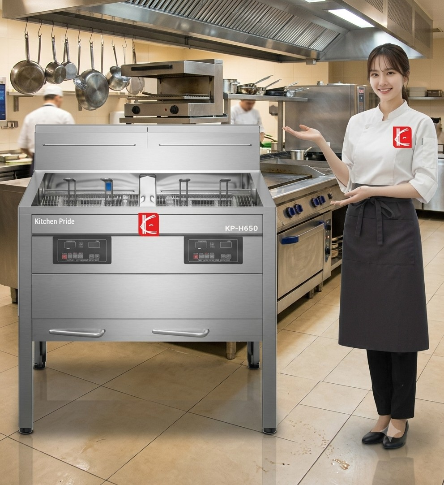

Pride in every
service, every day.
service, every day.
Our promise
주방의 오늘을 알고,
내일을 준비합니다.
좋은 장비는 주방의 리듬을 바꿉니다. 키친프라이드는 현장의 목소리를 먼저 듣고, 공간과 메뉴에 꼭 맞는 제품을 제안합니다. 처음 시작하는 주방에도, 더 나은 내일을 준비하는 주방에도 든든한 파트너가 되겠습니다.
현장을 이해하는 제안업종과 공간에 맞춘 실용적인 구성
검증된 제품의 기준매일 쓰는 장비일수록 꼼꼼하게
편안한 상담 경험처음 문의부터 설치까지 친절하게
오래 가는 파트너십구매 후에도 이어지는 지원